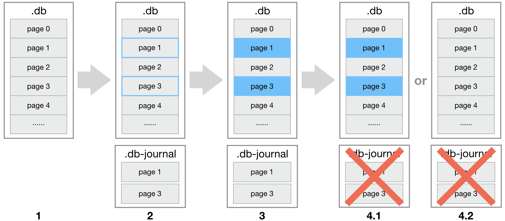
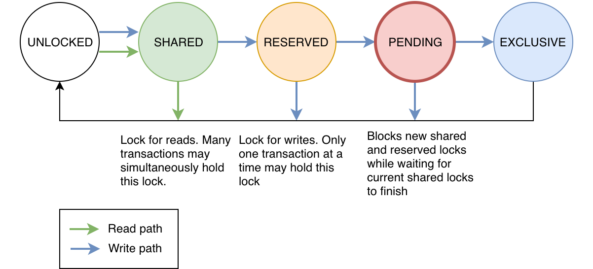
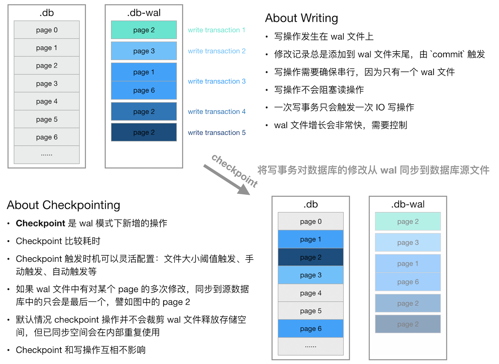

两个互斥锁：
- fullmutex：连接锁，用于确保任何时候最多只能一个线程在同一个连接上执行事务
- coremutex：文件锁，用于确保任何时候只有一个线程访问数据库
3种线程模型：（使用方式）
- single-thread：两个互斥锁都禁用，使用方需要保证单线程访问
- multi-thread：fullmutex禁用，coremutex开启，可以多个线程通过不同的数据库连接进行访问（单个连接只能单个线程内）
- serialized：两个互斥锁都开启，多线程安全（影响效率）
配置：
- Compile time
- Start-time config：sqlite3_config(SQLITE_CONFIG_SINGLETHREAD||SQLITE_CONFIG_MULTITHREAD|SQLITE_CONFIG_SERIALIZED)
- Runtime：sqlite3_open_v2() 第三个参数，SQLITE_OPEN_NOMUTEX或SQLITE_OPEN_FULLMUTEX
事务是 SQL 数据库里的通用概念，它描述的是一个或一组数据库操作指令的执行单元；具有四个属性：原子性、一致性、隔离性、持久性，即所谓 ACID，关于它的概念本文不过多赘述。
两种日志模型：rollback与wal

可以参考官方说明：Atomic Commit In SQLite
SQLITE_BUSY涉及到5种状态（Understanding SQLITE_BUSY

rollback的几种1
2
3
4
5
6
7
8
9
10
11
12
13使用 Rollback 模式
激活 rollback 日志模式可以在连接数据库后使用 pragma journal_mode 开启：
sqlite3 *db = NULL;
sqlite3_open("path/to/db", &db);
sqlite3_exec(db, "pragma journal_mode=delete", nil, NULL, NULL);
其中 rollback 模式下 journal_mode 的可选值包括如下值，它们用于指定 .db-journal 的清理方式：
delete: 清理 .db-journal 的方式是直接删除
truncate: 清理 .db-journal 的方式是清空文件内容（不删除，保留文件留作下次使用）
persist: 保留 .db-journal 文件，但会对文件的 header 做一些处理，以便 SQLite 能识别该文件是否有效
memory: .db-journal 文件不写磁盘，而是放在内存中；这种模式下，如果程序崩溃、断电，数据库可能就 gg 了
WAL 的全称是 Write-Ahead Logging
wal 日志模式中，提供了另一种日志类型，常称为 wal 文件，记为 .db-wal，在这个模型中，写操作都发生在 wal 文件中；另一个不同点是，.db-wal 文件是持久存储的，它是数据库完整的重要组成部分。
读操作，先读wal文件，如果查询不到，再读db文件，如果wal有多条记录，以最后的为准
通过checkpoint触发写

1 | sqlite3 *db = NULL; |
Comments